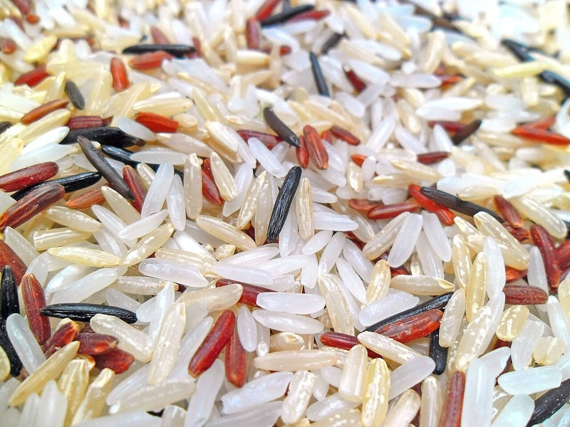

Zboża i kasze
Ryż brązowy (suchy)
Ryż brązowy (suchy): 7.5 g białka, 362 kcal, 76 g węglowodanów i 2.7 g tłuszczu na 100 g. Kategoria: Zboża i kasze.
Kalorie362 kcalna 100 g
Białko / proteiny7.5 g
Węglowodany76 g
Tłuszcz2.7 g
Cena (szac.)~0,85 złza 100 g
Ceny zaktualizowano: maj 2026 (szacunek — ceny w popularnych supermarketach)
Porcja: woreczek (100g)
| Kalorie | 362 kcal |
|---|---|
| Białko | 7.5 g |
| Węglowodany | 76 g |
| Tłuszcz | 2.7 g |
| Cena (szac.) | ~0,85 zł |
Szczegółowe składniki odżywcze na 100 g
| Wartość energetyczna (kalorie) | 362 kcal |
|---|---|
| Białko (proteiny) | 7.5 g |
| Węglowodany | 76 g |
| Tłuszcz | 2.7 g |
| Tłuszcze nasycone | 0.5 g |
| Tłuszcze nienasycone | 2.2 g |
| Witaminy i minerały | Magnez, Tiamina (B1), Żelazo |
| Współczynnik kcal / 1 g białka | 48.3 |
| Cena produktu (szac. za 100 g) | ~0,85 zł |
| Cena za 100 g białka (szac.) | ~11,33 zł |